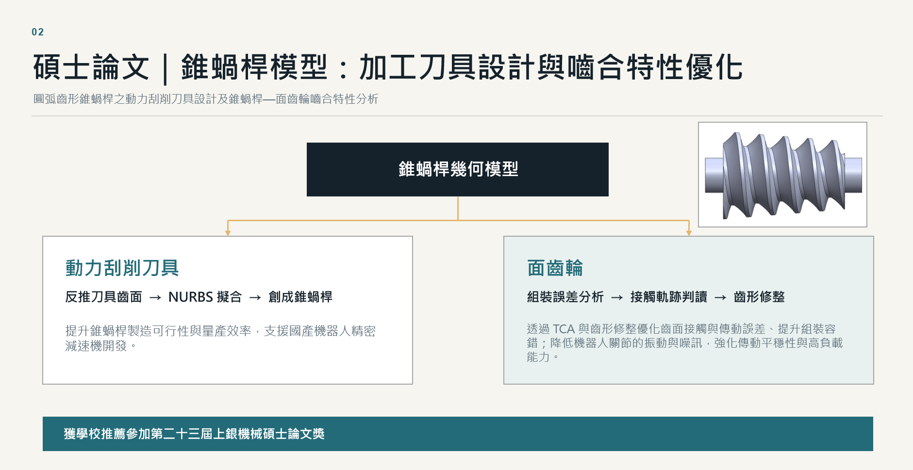
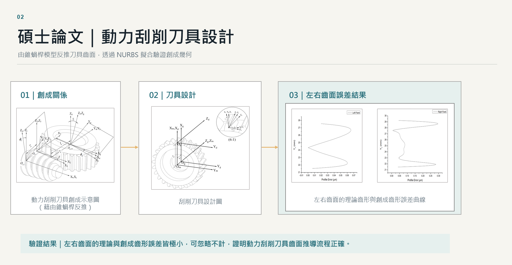
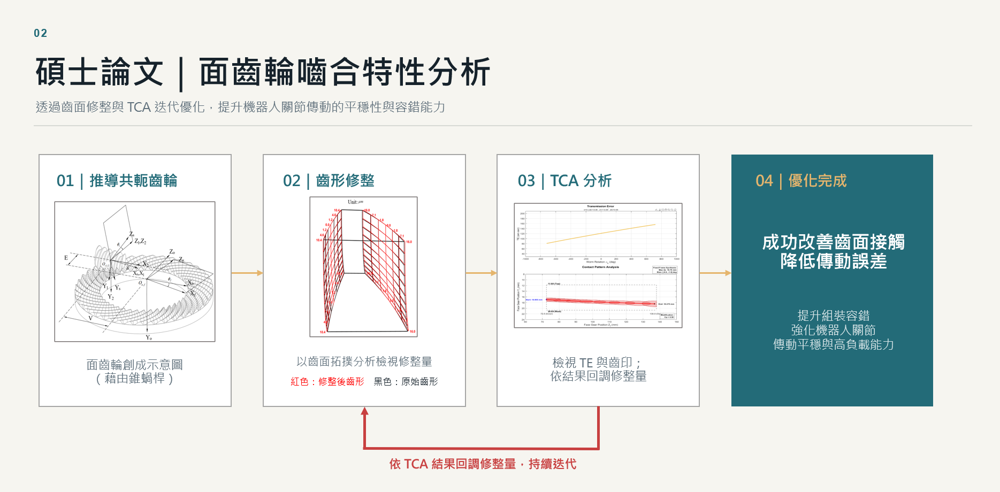
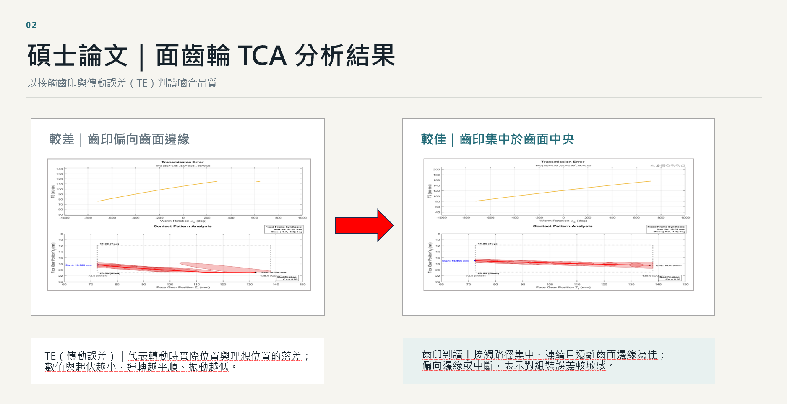
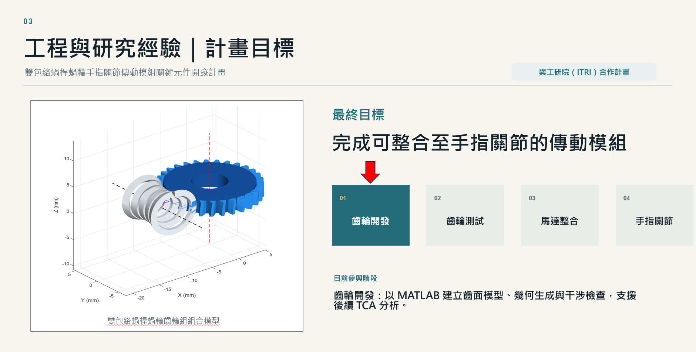
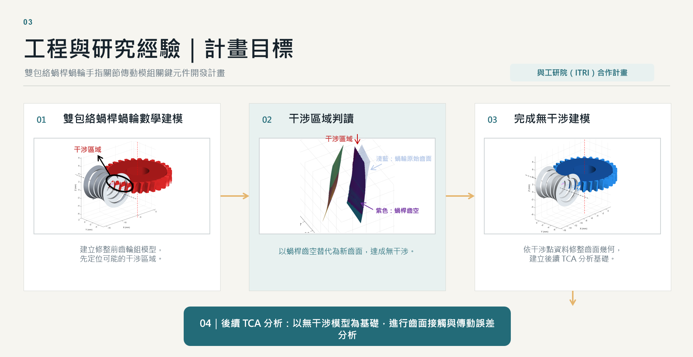

碩士｜國立中央大學
機械工程學系｜固力與設計組｜齒輪模擬分析實驗室
- 核心課程：機器動力學（ADAMS）
- 振動學
- 機械材料性質
YUN-LUN YU / 個人履歷
具齒輪數學建模、接觸力學、數值模擬與 MATLAB 演算法開發經驗的機械工程師。建立齒輪幾何生成、干涉評估與齒面接觸分析（TCA）之工程計算流程。
機械工程學系｜固力與設計組｜齒輪模擬分析實驗室
機械工程學系｜固力與設計組
研究重點：齒輪幾何數學建模與齒面接觸分析（TCA）。




計畫名稱：「雙包絡蝸桿蝸輪手指關節傳動模組關鍵元件開發計畫」。

